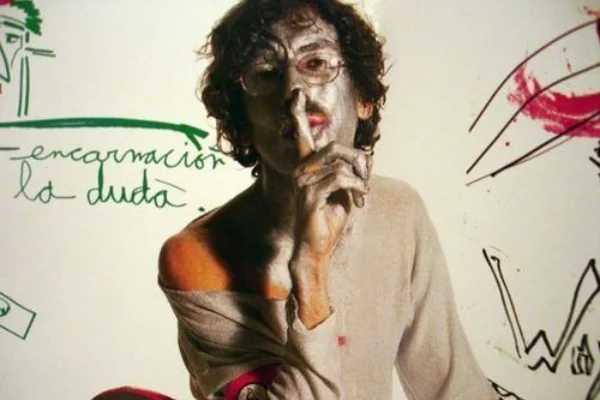

Galería Visual

El arte visual del disco refleja el caos, la oscuridad y la abstracción. Imágenes intervenidas, luces negras, trazos al azar y colores que evocan lo psicodélico.
se pondran mas imagenes sobre las imagenes que trae la libreta del disco del say no more